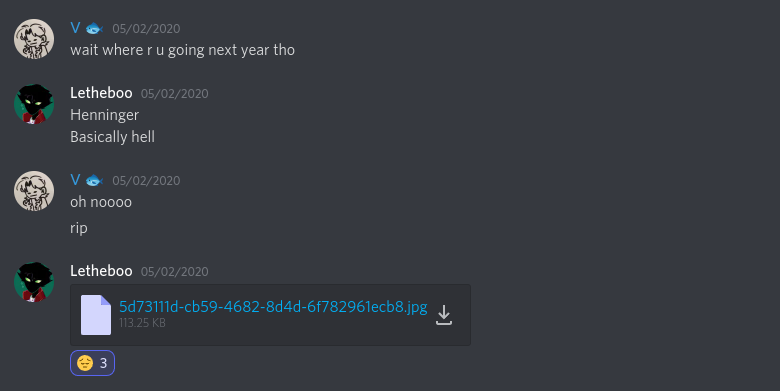

Michael Moves On
[5/02/20] Starting off with a sad one, Michael (a good pal of many in Spicerack) moved out of ESM, which is very unfortunate (I never even got to meet him). I wish him luck on his continuous travels, and he will always live on in Spicerack history
